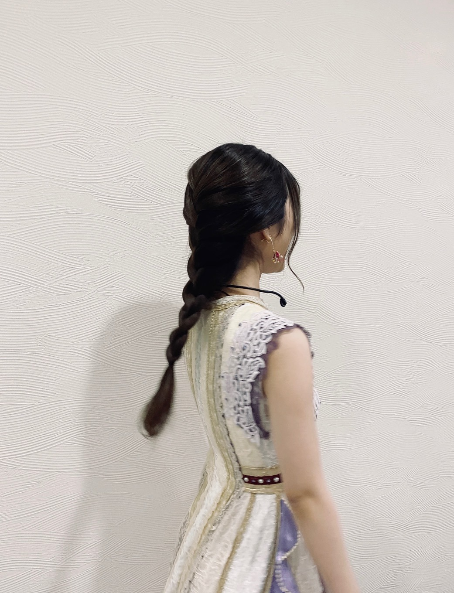
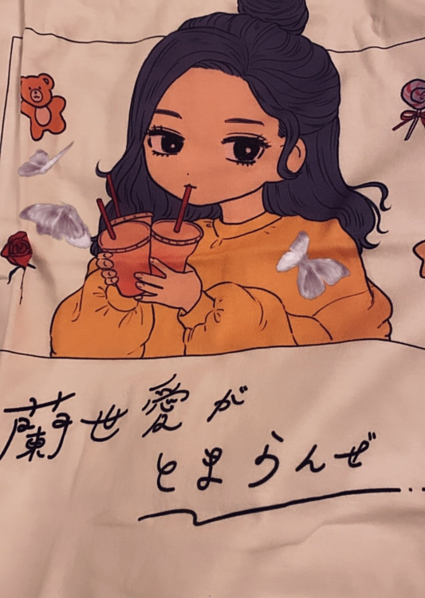

2020/1116Mon2020/11/16
少しずつではありますが
変わった日常に慣れつつあります。
でも、これから冬が本番です。
コロナは勿論
インフルエンザなどにも気をつけて
お過ごし下さいね。！
寒いけど換気をしたり
手払いうがいはマストです。
適度な保湿加湿も大切ですねー。！
ミーグリありがとうございました。
今年もしかしたら最後かもと言う事もあり
より、心温まる声を沢山掛けてもらえて
心から幸せな気分にもなりましたし
泣きそうになるくらい
愛されてるなと感じる事もありました。
実はモバメでもお話しさせて貰ったのですが
友達や家族に私のファンの人はいい人が多すぎる気がすると自慢することがあるんです。
友達は他のアイドルさんが好きなのですが
蘭世のファンは幸せ者だなっと言っていました、、、！！
少し脱線話ではありますが
妹は写真のセンスがいいから
アプリのアイコンとか
待ち受け写真に使いやすいからいいねと
なんともファン目線で冷静に褒めてくれたりと、、、
幸せに形は無くて
何をもって幸せと
感じるかは人それぞれではありますが
こんな素敵で綺麗な言葉がさらさらと出てくる
友人を持つことが出来たり
そんな素敵な家族のところに生まれてきたり
このアイドルという仕事をして
沢山の人と会う機会を得て
その中でもいい人達ばかりに出会えて
これは全て
自分らしく生きてきた証だと思いました。
今年は色んなことがある年ではありましたが
そんな時に振り返ってみたり
未来を想像してみても
私の周りはいつもキラキラしたもので溢れていました。
歩んできた道も
これから歩みたい道も
歩んできた道を信じて
そして大切に優しく包んでいきたいです。
そして、これから歩みたい道も
想像よるも輝けるように
いきたいです。
そしてそして、長くなり申し訳ないのですが
ananさん
arさん
Instagramを始めてから
こうしてファッション誌に載せてもらえると
より、嬉しく感じました。✨
どちらも素敵に撮っていただきました。✨
掛橋ちゃんブログありがとう。
ブログ読んだよー。
EX大衆さん
連載ページの出演ですが
ソロでインタビューさせて貰ってます。
私のプライベートな写真やまだ見せたことのない
お宝写真も公開してみた、、、！
久々に宝塚歌劇団さんについて話したのですが
うう、、、！
是非、チェックしてくださいね！
月刊ニュータイプさん
今年もこの季節がやってきました。✨
毎年有難いなーと噛み締めつつ
皆さんは今年特に好きだったアニメありますか？！
良かったらコメントでも教えて下さいね。
乃木坂新聞さん
NEWSがとまらんぜが最終回を迎えました。
コラムについての記事を載せていただいてます。
是非、チェックしてください。
そして、ここ数日撮影だったり収録だったり
色々楽しい事がありましたー。✨
是非、追って公式サイトもチェックしてて下さいね。✨
紅白ありがとうございます。✨
大切に大切に
こんなご時世ですが
いや、こんな時だからこそ
少しでも楽しんでもらえるように
私も楽しめたらいいなーと思います。
最近の私です。


コメント(727)
蘭世！ブログ更新ありがとう！
26枚目の選抜発表、見ました。
何回経験しても、緊張してなんとも言えない気分になります。
正直、結果はすごい悔しかったけど、蘭世からのモバメですごい安心したし、この子が推しなら大丈夫だ。って強く思えました。
選抜だからとか、アンダーだからとかそんなんで好きとかは絶対変わらないし、応援し続けます。蘭世がこの先歩いていく未来を見守りたいし、一緒に嬉し涙を流したいです。
支えてもらってるよ。毎日幸せをもらってます。でも、蘭世のことも支えたいし、少しでも力になりたいです。感謝をたくさん伝えに行きます。これからも話したいこと伝えたいことたくさんあります！これからも一緒に突き進んでいくから、蘭世は蘭世らしくいてください。！
乃木坂に入ってくれてありがとう！
蘭世の存在にいつも救われてます！
蘭世推しメンならなんの心配もないです！
ほんとにいつもありがとう！
これからも楽しんでいこうね！
26枚目もよろしくお願いします！
体には気をつけてね。
だいすきだよ！！！
蘭世さん推しの方々はいい人ばかりで熱い方ばかりですよね☺️
僕もいい人かどうかはわからないですが、熱い心を持ってると自負しております！
蘭世さんが楽しく仕事できてるようで何よりです：）
蘭世さんが楽しんでる様子は僕としても嬉しいです☺️
今年のアニメは魔法科高校の劣等生とポケモンですかね！！
魔法科高校の劣等生は2期やってくれてめちゃくちゃ嬉しいし、ポケモンは上手くは表せないけど、心にくることが多くなりました！映画も見に行きます☺️
月刊ニュータイプまた読みますねー！
本当にいつもありがとうね！
僕は蘭世さんを推しててとても幸せです。
本当に、心の底から大好きです。
I love you：）
悠人⊿
必ずらんぜの中の奥底にある、
マグマが、らんぜを駆り立て平穏に
楽しく無邪気ならんぜとして
活躍できる
蘭世のファンになってすごい良かったなって思ってるよ！
これからもずっと応援するよ！これからも頑張ってね！
また、ミーグリで話せると良いなって思ってるけど、来年は握手会とかが開催できるといいね！
またブログ更新されるの楽しみに待ってるね！
選抜発表を見て思うことが多々ありますが
どこにいても自分のセンターは蘭世で不動です。
今回はアンダー楽曲あるのかな？
どんな曲になるか楽しみです
NEWSがとまらんぜ、5年間お疲れ様でした！
毎回楽しみに読んでたので終わったのは少し悲しいですが
またこういった機会があることを期待しています。
紅白内定おめでとうございます！
今年の終わりも乃木坂46を見て終われること、とても嬉しく思います。
曲も何をやるか予想がつかないので
それもまた楽しみです。
いつもありがとう
ファンを大切にしてくれてありがとう
自分を大切にしてくれてありがとう
いつも笑顔でいてくれてありがとう
ユースケ
今日も一日お疲れ様です！
最近は毎日寒くて冬を乗り越えられるか心配です笑
蘭世も体調に気をつけて無理せず過ごしてね！
ミーグリ毎週楽しませてもらいました！
本当にありがとう！
好きな人に毎週会えるなんて幸せすぎました笑
次がいつか分からないけどまたよろしくね！
メールもありがとね！
蘭世推しは本当に熱くて優しくて良い人ばかりです！
蘭世のことはもちろん、蘭世推しのことも大好きだし、自慢の仲間たちです！
完全に蘭世の推しになるべくしてなった人達です笑
これからも誰より近くで応援したいし力になりたいです！
蘭世を知ってもらうきっかけも作りたいし魅力を分かってもらいたい！
蘭世はこんなに素敵で可能性に満ち溢れてる女性だと知って欲しい！
好きなことを自由になんの遠慮もなく伸び伸びとやって欲しいです！
プレッシャーや周りの雑音を気にする必要はありません！
そんなものは僕達が全部背負います！背負わせてください！
いつでもどんな事があろうと僕達は蘭世の味方です！
出会ってくれて本当にありがとう！
大好きです！
こうやってタイムリーに文字に起こして
気持ちを伝えてくれる事
本当に嬉しいし、感謝でいっぱいです
気持ちを伝えてくれてありがとう
直接想いを伝えたいのに私には
握手券が無くて、コロナ期間に入ってから
寺田さんとお話する機会が無く
文字でしか伝える事が出来なかったけど
この期間、本当に寺田さんには
沢山気持ちを、言葉を、愛を貰ったな〜って
すごく感じています
もちろん、私も沢山想いを伝えたつもりです
(伝わってるといいな)
寺田さんの気持ちメールの方でも
しっかりと受け止めました
そしてまた私も、それに対して
返していきたいです
大好きだから
心から尊敬しているからこそ
まだまだこれから寺田さんの歩む道を
一緒に一歩一歩、一瞬一秒逃すことなく
進んでいきたいです
これからもあなたは自慢の推しメンです
寺田さんの意思を
しっかりと見守らせてくださいね◎
あなたは十分すぎるぐらいに
私に幸せを与えてくれています
本当に、心の底から思うよ
なんだろう、上手くは言えないけれど
寺田蘭世という人物がいる限り
ずっと応援し続けていきたい
大好きな人
いつもありがとう
ごちゃごちゃな文章でごめんなさい
これから変わらず、何卒よろしくね
すきよーーーーーー
ゆうき(ゆっちゃん)
メールも沢山送ってくれてうれしいです！
今年もあっという間に終わってしまいますね。。
なかなか握手会やライブなどに行くことが出来ず
自分としてはモヤモヤとした1年を過ごしてしまいましたが
らんぜさんが日頃からコラムやブログを更新してくれて
メールをいっぱい送ってくれて
最近ではInstagramも始めてくれて
すごくワクワクの溢れる1年
準備の1年、充電の1年に出来ました！
まだまだ流行病など
不安要素はありますし
この数日で
コラムの引き継ぎや新シングルなど
目まぐるしい環境の変化を感じていますが
色んな経験を通して
いまを生きることを楽しめれば
と思います！
蘭世さんを支えられるように！
らんぜさんとみんなと笑顔でまた会えるように！
蘭世さんと出会えてすごく幸せですし
これからもよろしくお願いいたします！
らんぜは僕の自慢の推しです！
僕もらんぜさんの自慢のファンになれるよう精一杯がんばりますっ！
また遊びに来るね！
朝晩は冷えるので暖かくするんだよー！
体調気を付けてね！！
コラムお疲れ様です！
これからもいろんな新しい蘭世を見られるのを
楽しみにしてます！
ずっと応援するからね！
絶対にそうだよ
便箋にスヌーピーの絵描いたよ！
時間があったら読んでください！
だいすき！
あいら。
蘭世ちゃんも体調には気をつけて、年末に向けて頑張ってください！
ミーグリも本当にありがとうございました。
蘭世ちゃんに私の気持ちが伝わってると嬉しいです☺️
蘭世ちゃんは家族、友人に沢山愛されてますね☺️
それはきっと、蘭世ちゃんが素敵な人だから周りもそういう人たちが集まってるんやろなって思う！
嬉しい、頑張ろう、楽しい、幸せ、時には悲しい、辛い、
色んな感情や時間を与えてくれてありがとう。
蘭世ちゃんに出会えた私って、なんて幸せ者なんだろう。
妹さんが言うようにお写真もお洒落なものばかりで、アイコンとかホーム画にさせてもらってます✌︎
これからも支え合って一緒にキラキラな毎日を進んでいきたいです✨
いっぱいの雑誌！
嬉しいことですね☺️
紅白も出場おめでとう✨
今年も紅白で乃木坂締めをできるのが嬉しいです！
楽しみにしてます！！
メールで送ってくれた自撮りも、、！
可愛い♡♡♡
最後のも素敵ですね。
やったー。蘭世の御家族や友人にまで自慢されてるんですね。!!!蘭世推しは本当に幸せ者だわ。
正直に申し上げますと、昨夜から僕含めファンがザワザワしてました。でも、一番複雑な心境のはずのメンバーからの言葉に前を向こうという気持ちになりました。もちろん諦めたわけではなく、きちんと悔しいという気持ちだったり、やるせない思いもあります。
どんな環境だって楽しもうとしてる姿を見て、蘭世には敵わないなぁ、頑張らなきゃって勇気をもらってます。
これからも何卒宜しくお願いします。
ブログ更新ありがとう！
ミーグリありがとう。
久しぶりに顔見れて元気もらえたよ〜
話したいことがたくさんで
とっ散らかってたかもしれないけど
お話しできて良かった☆
蘭世が素敵だから
周りに素敵な人で溢れているんだろうなぁ
モバメで読んですごく思った。
蘭世を応援することができて
蘭世に出会えて私はすごく幸せだよ！
日々蘭世への感謝とか好きという気持ちが
溢れてしまう…
蘭世への愛がとまらんぜ◎
EX大衆読んだよ！
コラム、本当にお疲れ様でした。
これからも、照らすなんて大層なことはできなくても
蘭世の歩む道を一緒に進めたらな〜と
いつもありがとう
26thも楽しい期間にしよう〜！
またコメントするね。
ではっ！
蘭世のファンにいい人が多いのは
君が飾らない心でファンと向き合っているからだと思うよ。
そのココロを大切にね☺️
ミーグリこちらこそありがとう。蘭世と話すのが楽しみで楽しみで、それが原動力だった！というかミーグリに限らず、「あ、蘭世が頑張ってる！おれも頑張らなきゃ！」とか、「蘭世が応援してくれた！まだまだいける！」とか、蘭世のことばにいつも励ましてもらってます。
蘭世のまわりに良い人が多いのは、きっと蘭世が良い人だから、蘭世のことばに影響されたからだと思ってます。
本当にいつもいつもありがとう。自慢の推しです！
これからも、貴女らしく全力でやりたい道を突き進んでください。
蘭世愛がとまらんぜ♡
らしさが出ててとても素敵
蘭世ぴんの周りには素敵な人が
沢山いるんだなと、改めて誇りに思います
これからも一緒に頑張ろうね
季節の変わり目ですから、蘭世さんも体調には十分お気をつけください
蘭世さんはダンスの表現力がすごく、行動の一つ一つはとても可愛く、そのギャップがすごくいいなと思います
蘭世さんのファッションも大好きですし、仕草のひとつひとつも、パフォーマンスも大好きです！
蘭世さんから元気を沢山頂いているので、僕たちファンも蘭世さんに元気や幸せを与えられるように、精一杯応援していきます！
選抜発表は残念でしたけどこれからも引き続き応援します！
インスタも毎日楽しみにしてます！
私は蘭世さんに出会えてとても幸せ者です！！
これからもずっと蘭世愛がとまらんぜ
いつも、応援させていただいています。
可愛くも大人っぽく、幼い部分はあっても芯が通った蘭世さんが大好きです。
何より蘭世さんがやりたいことをやって幸せになってくれれば、それこそがファンの幸せだと思います。
Instagramも見させてもらってます。
これからも勝手にではありますが、蘭世ちゃんと一緒に壁を乗り越えるつもりで応援していくつもりです。
モバメもとてもサイコーです。
蘭世の好きなことがインスタなどを通して、叶うことを応援してます。
今年はインフルエンザだけに注意ではなさそうですね…
蘭世さんも体調には気を付けて下さいね！
ミーグリ楽しんでもらえてるようで何よりです。
蘭世さん推しは暖かい方が多いと思います。
こんなご時世でもお話ができるいい機会ですので、色んな方とのお話も楽しんでくださいね。
ファンの方も蘭世さんとお話しできて元気を貰えていると思いますよ〜
「類は友を呼ぶ」なんて言葉がありますが、蘭世さんの周りに素晴らしい方が集まるのは、蘭世さん自身の力だったり魅力だったりのおかげだと思いますよ。
皆さん蘭世さんに引かれるように集まってくるのは、蘭世さんの活動の成果かもしれません。
それを一つの自信にして下さいね！
蘭世さんのこれからはどうなりますかね？
我々ファンも楽しみにしていますし、そのための道を作ってみせますよ。
我々はいつでも見守って応援していますから、思いっきり楽しみながら進んで行って下さい！
一緒に輝きましょう！！
沢山の取材、チェックするのが追いきれないほどです笑
それだけ注目してもらえるのも嬉しい事ですね！
紅白も楽しみにしていますよ〜
これからもいつまでも応援しています！
正直とても悔しいです。でも蘭世はもっともっと悔しい思いをしてるよね。でも僕は蘭世が1番だと思います。
蘭世の成功と幸せをこれからも願ってます
頑張れ！！！！！
ブログ更新ありがとうー！
蘭世のそのずっと変わらぬ熱い意志がある限り
きっといつかまた良い方向に結果が出ると思うよ。
これからも互いに頑張ろう。
応援してます。
紅白出場おめでとうございます！
年末に乃木坂46のパフォーマンスを観れるのがとても嬉しいです！
寺田さんも体調には気をつけて下さい、最近は昼と夜で温度差が大きいので
乃木坂46のファンになって寺田さんを知れてよかったと思うことがあります。それはきっと綺麗で可愛いのはもちろん
自分に無いものをもっていて頑張る姿に憧れてるのかもしれないです
寺田さんこれからもずっと応援します！
素敵です。
再放送ですがジョジョ3部ですね
2期生本当に大好きなんでこれからも全力で応援します！
ファンの皆も必ず力になります！
ありがと〜
てないみたいで、逆になんか物足りない。
コラムをバトンタッチしたから、
らんぜちゃんの思ってる事、もっとブロ
グで読めるようになるかな。
発信力を止めるのはもったいない。どん
な形にせよ、続けて欲しいなぁ。
ＮＥＷＳだけじゃなく何事もとまらんぜ。
アイドルの姿勢ファンの態度は表裏一体。
お互い響きあってこそですよね。
これからも僕らに夢を見せ続けて下さい。
さらに免疫力大事ですね、蘭世さんもお気をつけて！！
蘭世さん推しはいい人たちばかりで素晴らしいですね
これも蘭世さんの活動や言葉が響いた証拠だと思います！
特に我が道というものを大切にしていると見ていて分かって、そんな蘭世さんが大好きなので、これからも蘭世さんらしい活動をしていってほしいです！そしてそれに少しでも力になれるように全力で応援していきます！！
全部チェックしますねー！特にNEWSがとまらんぜお疲れ様でした！
蘭世さんの言葉だからこそというのもあり、それが様々な人に伝わったからこそこれだけ長く続いたんだと思います！！
紅白！今年もおめでとうございます！ちゃんと見逃しませんよ！
そしてモバメありがとうございます
自分は少ししか力になれないかもしれないけど、できるだけ蘭世さんに支えてもらってばかりなので、蘭世さんの力になりたいです
お互いに頑張りましょう！！今までもこれからも応援し続けます！！！
今回の1曲！
米津玄師さんの｢しとど晴天大迷惑｣！
正直テンション上がるから聴いてる曲です！
曲中にもあるように太陽浴びて、声出して、このご時世に負けないように元気だしていきましょー！
またお知らせ楽しみにしてますね！
蘭世愛がとまらんぜ！！これからも寺田蘭世推し！！
結構、時事的なことをテーマにしていましたよね。
不特定多数の人が読むわけですから、プレッシャーも相当だったと思います。お疲れ様でした。
「最近の私」の写真、相変わらず目力強いですね。
ブログの更新ありがとうございます。
そして、紅白出場決定おめでとうございます！
年末の最後の最後に乃木坂を見納められること、すごく幸せです。
楽しみにしています！
そして、蘭世ちゃんのファンに良い人が多いのは蘭世ちゃん自身が
とても素敵な人だからだと、このブログを読んで再び痛感しました。
蘭世ちゃんがとても魅力的だからこそ
蘭世ちゃんの歩んできた道を追いかけていきたいと思うし
どんな険しい坂道もいっしょに登っていきたいんだと思います。
いつだって蘭世ちゃんについていきます。大好きです。
ファンの蘭世愛は止まらんぜ。
これからも乃木坂46のメンバーで
活躍して欲しいです。
蘭世とTシャツ、かわいいぜ。
選抜発表についてのコメントは前のブログにしたので時間があれば見てほしいな！
前に進み続ける蘭世を自分たちが引き止めるようなことはしたくないので、蘭世についていき続けます
後ろは向かなくとも自分たちがいる事を信じていてください！
これからもよろしくお願いします
インスタ、ブログ、モバメなどなどいろんな所で蘭世が見れて幸せです
ありがとうございます
選抜入りはしなかったけど、それでも君を応援しようとする気持ちは変わらないです。大したことはできないけれど、少しずつ前向きになって自分のやるべきことを成し遂げようと歩みだすのをしっかり見守っていきます
まいやんが卒業して、だいぶグループの雰囲気も変わりましたが、乃木坂らしさは変わらず来年もきっと坂を上って良い未来へ歩みだすと信じています。
いつもモバメやインスタを見ています、らんぜちゃんが負けずに頑張ってて、とても偉いです。
どんなに辛くても夢や目標を忘れず、心地よい光に向かって前進してほしいです
あなたの熱意がこもっている文章に勇気づけられています。いつになるかわからないけど、握手会で直接会える日がきっと来ると信じ頑張ります
本当にいつもありがとう、体調に気を付けてください
牡羊座の介護士アリエス
紅白おめでとうー！
これからも応援してます！最近寒くなって来たので体調に気を付けて頑張ってね！
蘭世推しになれて幸せです！
まだまだ卒業しないでね！
大好き！
言葉が難しいけど意識してみんなに広めようと思ってる訳じゃなくて、自然と自分の推しメンはこんな人なんだよって話したくなるほど蘭世が出来た人なんですよ
最近は立て続けに雑誌の発売があって発売される度にワクワクして本屋に行くのが恒例になってました
5年間コラムお疲れ様でした
蘭世独自の目線と言葉で見るニュースが自分が感じたものとは違っていて知らない視点を気づかせてくれました
積み上げてきたこのコラムは宝物です
コラムをまとめた1冊みたいなものが出来ると嬉しいですね
僕がおすすめするアニメはヴァイオレットエヴァーガーデンです。
僕も映画が公開されるということで、友人から勧められて見始めたのですがどハマりしました。
アニメでは特に10話をおすすめしたいと思います。
もしお時間があれば見てみてください。
いつも蘭世はファンのことを支えてくれると言ってくれるけど、正直支えてあげられてるのかなと思っていることが多いです。落ち込んだりした時も蘭世にたくさん元気をもらってるし、辛い時にもこんなことでめげてられないと1歩を踏み出す勇気をくれます。
蘭世と一緒にこれからも蘭世の夢へと歩んでいきたいなと思ってます
いつもありがとう
元気をありがとう。
そして本当にお美しい。見るたび惚れちゃいます。
これからも蘭世ちゃんの姿いろんな所で見れるのを楽しみに
してます！！！
ブログ更新ありがとう！
慣れた頃が何でも一番怖いから尚の事気を引き締めないとな。
インフルエンザにも気を付けないと。
蘭世
換気は大事！
手洗いうがいもしっかりとな！
そうそう感想もするからな。
蘭世
ここはモバメでお返事書いたな笑
ほう！妹さんはそういうセンスに長けてるんや
有難いねそういう風にちゃんと蘭世
良い家族。
せやね色々幸せの感じかたは人それぞれだけど。
自分が幸せだと思えることは大事にしていかないとな。
ホンマ良い方に出逢えたりするのは何回も書くけど蘭世
自分の周りがキラキラしてっるのはホンマ良き良き。
これからの道もイメージして進んでいこうその輝く道をね。
雑誌＆新聞はホンマええ感じで最高やったし、知らん蘭世
おお！そんなに楽しい感じだったのか！
良き良き
公式な～たまに載ってないからな…
でも自力で探すし追っかけるわ
紅白もおめでとう。
正直紅白やるんやって今朝思った笑
まぁこういうご時世だからしないのかなとも思ってたけど、やるからにはコロナ対策もしっかりとしてやって欲しいな。
最近の蘭世
昔も最高なんだけどな。
この前テレビでアルピの平子が言うてたんだけど、嫁さんの事を『昨日よりも今日の方が好きだし明日はもっと好き』ってこれそうなんよね、まさに蘭世
だから飽きるこはない。
飽きるについても言うてたな笑
『人に飽きることは一生ありません、相手の事をすべて知ったっていうのは慢心です』これもその通り！！って思った。
もう平子さん最高！って笑
てかこれ最後のはTシャツかな？
ファンの方が作ったんかな？めちゃくちゃええやん
まさに＃蘭世
きっとまた後で(｡･ω･)ﾉﾞ


すごい参考になってもう目が離せません。
これからの活動、そしてInstagramも楽しみにしてます！！
プロデュースの活動とか夢に向かって頑張ってください！
キラキラする世界を一緒に見てみたいです。